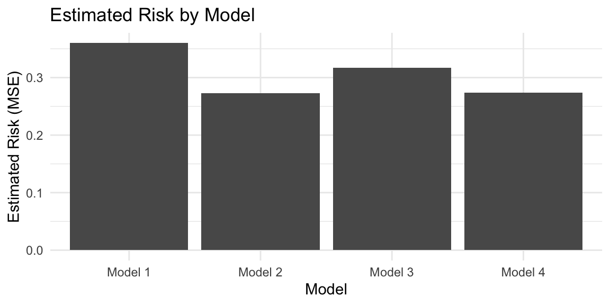

library(tidyverse)
set.seed(42)
n <- 50
df <- tibble( # like data.frame, but columns can be functions of preceding
x1 = rnorm(n),
x2 = rnorm(n, mean = 2, sd = 1),
x3 = rexp(n, rate = 1),
x4 = x2 + rnorm(n, sd = .1), # correlated with x2
y = x1 * 3 + x2 / 3 + rnorm(n, sd = 0.5) # function of x1 and x2 only
)Lecture 4: Model Selection
Learning Objective
By the end of this lecture, you should be able to:
- Define and differentiate between testing error, expected test error, and risk
- Choose amongst metrics and estimators for model selection on a variety of problems
- Identify when a validation-set estimator of risk is biased or (nearly) unbiased
- Perform cross-validation to perform variable selection in linear regression
Motivation
We are now going to fill in the remaining steps of the learning procedure from a statistical perspective. We’ve already covered defining the statistical model, estimation, and prediction.
| Step | CS Perspective | Statistical Perspective | Example: Linear Regression |
|---|---|---|---|
| 1 | Split data into train/test/val | ??? | ??? |
| 2 | Hypothesis Class | Statistical Model | \(\mathbb{E}[Y \mid X = x] = x^\top \beta\) |
| 3 | Training | Estimation | \(\hat{\beta}_\mathrm{MLE/OLS} = (\boldsymbol{X}^\top \boldsymbol{X})^{-1} \boldsymbol{X}^\top \boldsymbol{Y}\) |
| 4 | Validation | ??? | ??? |
| 5 | Iteration | ??? | ??? |
| 6 | Testing (Inference) | Prediction | \(\hat{Y}_\mathrm{new} = X_\mathrm{new}^\top \hat{\beta}\) |
- From a statistical perspective, steps 1, 4, and 5 blur together in a procedure we call model selection.
- At a high level, the purpose of these three steps is to choose the best statistical model given our training data.
Defining “The Best Model”
Possible Metrics for “Best Model”
Test error
On (almost) every learning task, we usually withhold some test data \(\left\{ (X_j, Y_j) \right\}_{j=1}^t\), assumed to be i.i.d. from the same distribution as our training data.
Given our training set \(\mathcal D = \left\{ (X_i, Y_i) \right\}_{i=1}^n\), the test error is:
\[ \widehat{\mathrm{Err}}_\mathcal{D} := \frac{1}{t} \sum_{j=1}^t L(Y_j, f_\mathcal{D}(X_j)) \]
I.e. we train our model \(\hat f\) on \(\mathcal D\), and then compute its average loss on the test dataset.
Expected test error
As \(t \to \infty\), \(\widehat{\mathrm{Err}}_\mathcal{D}\) converges (by the law of large numbers) to: \[ \mathrm{Err}_\mathcal{D} := \mathbb E \left[ L(Y, \hat f_\mathcal{D}(X)) \mid \mathcal D \right] \]
We call this the expected test error.
Note that the training set \(\mathcal D\) is fixed.
Why?
We are assuming that the number of test samples \(t\) goes to infinity, but we’re assuming the training set doesn’t change. So we’re averaging over the randomness in the test point \((X, Y)\) only, but not the randomness in the training set \(\mathcal D\).
Intuition: your boss hands you training set \(\mathcal D\), and you train a \(\hat f_\mathcal{D}\) that’s going to be deployed for a very very long time. \(\mathrm{Err}_\mathcal{D}\) estimates the error you’ll get on the many many predictions that will be made by your model.
Risk
Risk, which is one level more abstract than expected test error, averages over all sources of randomness: \[ \mathcal R := \mathbb E \left[ L \left( Y, \hat f_{\mathcal D}(X) \right) \right] \]
Note that all sources of randomness includes the test datapoint \((X, Y)\) as well as the training dataset \(\mathcal D\).
We can relate \(\mathcal R\) to the expected test error via:
\[ \mathcal R = \mathbb E \left[ \mathrm{Err}_\mathcal{D} \right] \]
Why?
Tower rule!!!
\[\begin{align*} \mathcal R &= \mathbb E \left[ L \left( Y, \hat f_{\mathcal D}(X) \right) \right] \\ &= \mathbb E \left[ \mathbb E \left[ L \left( Y, \hat f_{\mathcal D}(X) \right) \mid \mathcal D \right] \right] \\ &= \mathbb E \left[ \mathrm{Err}_\mathcal{D} \right] \end{align*}\]
Intuition: if you were to get a new training set \(\mathcal D'\) and retrain your model, how well would it perform on average?
In a Perfect World, Which Metric Should We Use?
Let’s ignore the fact that we have access to limited amounts of data, and pretend that we happened to know all three of these metrics exactly. Which one should we use?
Test error is out. There’s nothing special about the particular test set we happened to withhold. We’d much rather know the average error over all possible points, so expected test error is strictly better.
Regarding expected test error vs. risk, there’s some debate. In general I would argue that risk is actually the metric we care most about.
NoteExpected Test Error vs. Risk
Reasons to prefer expected test error
- In practice, we only have one training set \(\mathcal D\).
- Expected test error tells us how well our model will perform on the particular training set we are given.
Reasons to prefer risk
- In practice, we might get new data to retrain our model on; we don’t want a metric that’s dependent on a particular training set.
- If we’re trying to select a “best” model, we’d ideally like one that’s not too sensitive to the particular training set we happened to get.
- As we will see next lecture, risk is easier to analyze theoretically.
- In 75% of scenarios, it doesn’t matter if we target risk or expected test error. (In practice, most estimators of risk are also estimators of expected test error, and vice versa.) However, we’ll see some cases (e.g. on Homework 2) where the distinction matters.
Estimating Risk
Bad Idea: Training Error
A common mistake is to use training error as an estimator of risk:
\[ \widehat{\mathrm{Err}}_\mathrm{train} := \frac{1}{n} \sum_{i=1}^n L(Y_i, f_\mathcal{D}(X_i)) \]
Training error is almost always a severely biased estimator of risk, and should never be used for model selection.
Why?
- The training error is computed on the same data that was used to train the model.
- Therefore, the model has “seen” this data before, and has likely fit it quite well.
- In contrast, risk is computed on new, unseen data.
- As a result, training error underestimates the true risk of the model.
- The training error is computed on the same data that was used to train the model.
(Training error does indeed have its uses; we’ll see one example next lecture!)
Ideal Solution: Many Samples of Training Data + One Test Point
Imagine we had access to a generator that produces random \(\left\{ (X_i, Y_i) \right\}_{i=1}^{n+1}\) samples, where the \(n+1\) pairs are i.i.d.
We could estimate risk by:
Generating \(m\) samples \(\left\{ \left\{ (X_i^{(j)}, Y_i^{(j)} \right\}_{i=1}^{n+1} \right\}_{j=1}^{m}\)
Estimate risk as: \[ \hat{\mathcal R} \approx \frac{1}{m} \sum_{i=1}^m L_j, \quad L_j = L\left( Y_{n+1}^{(j)}, f_{\mathcal D^{(j)}}( X^{(j)}_{n+1}) \right), \quad \mathcal D^{(j)} = \left\{ (X_i^{(j)}, Y_i^{(j)}) \right\}_{i=1}^n. \]
- In other words, for each of the \(m\) samples, we train a model on the first \(n\) data points, and compute its loss on the \(n+1^\mathrm{th}\) datapoint we withhold from training.
By the law of large numbers, as \(m \to \infty\) we have:
\[\hat{\mathcal R} \to \mathbb E[ L( Y_{n+1}, \hat f_\mathcal{D}( X_{n+1}) )] = \mathcal R\]
Practical Solution: Cross-Validation
- In practice, we only have access to a single dataset \(\mathcal D = \left\{ (X_i, Y_i) \right\}_{i=1}^n\) with \(n\) data points.
- Nevertheless: we can approximate the ideal solution above using leave-one-out cross-validation (LOO-CV).
TipCross Validation
- Given: a single dataset \(\mathcal D = \left\{ (X_i, Y_i) \right\}_{i=1}^n\)
- For each \(i = 1, \ldots, n\):
- Train a model \(\hat f_{\mathcal D_{-i}}\) on the dataset with the \(i^\mathrm{th}\) point removed: \(\mathcal D_{-i} := \left\{ (X_j, Y_j) \right\}_{j \neq i}\)
- Compute the loss on the withheld point: \(L_i := L(Y_i, \hat f_{\mathcal D_{-i}}(X_i))\)
- Estimate risk as: \(\hat{\mathcal R}_\mathrm{LOOCV} := \frac{1}{n} \sum_{i=1}^n L_i\)
Why Does LOO-CV Work?
Each \(L_i\) is an unbiased estimate of risk on a training set of size \(n-1\):
\[\begin{align*} \mathbb E[L_i] &= \mathbb E \left[ L(Y_i, \hat f_{\mathcal D_{-i}}(X_i)) \right] =: \mathcal R_{n-1} \\ \end{align*}\]
By linearity of expectation, we also have that \(\hat{\mathcal R}_\mathrm{LOOCV}\) is an unbiased estimate of risk on a training set of size \(n-1\):
Derivation:
\[\begin{align*} \mathbb E[\hat{\mathcal R}_\mathrm{LOOCV}] = \mathbb E \left[ \frac{1}{n} \sum_{i=1}^n L_i \right] = \frac{1}{n} \sum_{i=1}^n \mathbb E[L_i] = \mathcal R_{n-1} \end{align*}\]
Unlike our “ideal estimator” above, the \(L_i\) are not independent, and therefore we can’t apply the law of large numbers to conclude that \(\hat{\mathcal R}_\mathrm{LOOCV}\) converges to \(\mathcal R\).
In practice, however, \(\hat{\mathcal R}_\mathrm{LOOCV}\) is often a good estimator of risk.
A More Efficient Solution: K-Fold Cross Validation
- LOO-CV requires training \(n\) separate models, which can be very expensive.
- A more efficient alternative is K-fold cross validation (K-CV):
TipK-Fold Cross Validation
- Given: a single dataset \(\mathcal D = \left\{ (X_i, Y_i) \right\}_{i=1}^n\)
- Randomly split \(\mathcal D\) into \(K\) (roughly) equal-sized “folds”: \(\mathcal D_1, \ldots, \mathcal D_K\)
- For each \(k = 1, \ldots, K\):
- Train a model \(\hat f_{\mathcal D_{-k}}\) on the dataset with the \(k^\mathrm{th}\) fold removed: \(\mathcal D_{-k} := \bigcup_{j \neq k} \mathcal D_j\)
- Compute the loss on the withheld fold: \(L_k := \frac{1}{|\mathcal D_k|} \sum_{(X_i, Y_i) \in \mathcal D_k} L(Y_i, \hat f_{\mathcal D_{-k}}(X_i))\)
- Estimate risk as: \(\hat{\mathcal R}_\mathrm{K-CV} := \frac{1}{K} \sum_{k=1}^K L_k\)
Decreasing \(K\) decreases the number of models we need to train.
However, decreasing \(K\) also results in a worse estimator of risk.
Why?
Intuitively: as \(K\) decreases, each model is trained on less data, and we’re trying to estimate the risk of a model trained on all \(n\) data points.
Formally: each \(L_k\) is an unbiased estimate of risk on a training set of size \(n - n/K\), but the difference between \(\mathcal R_n\) and \(\mathcal R_{n - n/K}\) can be significant for small \(K\).
Model Selection (Finally!)
Now that we’ve chosen risk as our metric for “the best model,” model selection amounts to choosing the statistical model with the best risk.
TipModel Selection
- Given: a single dataset \(\mathcal D\)
- for however long you have,
- Propose a statistical model (e.g. linear regression, decision tree, neural network, etc.)
- Estimate its parameters on \(\mathcal D\) to get \(\hat f_\mathcal{D}\)
- Estimate its risk \(\hat{\mathcal R}\) using K-CV (or some other method)
- Choose the model with the lowest estimated risk \(\hat{\mathcal R}\)
Example: Variable Selection
Consider the following synthetic dataset, where we have:
\[ Y = 3 X_1 + \frac{1}{3} X_2 + \epsilon, \quad \epsilon \sim \mathcal N(0, 0.5^2) \]
Note that \(Y\) is a function of \(X_1\) and \(X_2\) only, and \(X_3\) and \(X_4\) are irrelevant to predicting \(Y\).
We might consider the following statistical models (here written as linear regression models), in all cases assuming \(\epsilon \sim \mathcal N(0, \sigma^2)\) for some \(\sigma > 0\):
- Model 1: \(Y = \beta_0 + \beta_1 X_1 + \epsilon\)
- Model 2: \(Y = \beta_0 + \beta_1 X_1 + \beta_2 X_2 + \epsilon\)
- Model 3: \(Y = \beta_0 + \beta_1 X_1 + \beta_2 X_2 + \beta_3 X_3 + \epsilon\)
- Model 4: \(Y = \beta_0 + \beta_1 X_1 + \beta_2 X_2 + \beta_3 X_3 + \beta_4 X_4 + \epsilon\)
ImportantVariable Selection is a Specific Instance of Model Selection
You might recognize this setup as a variable selection problem. (Even more specifically, these model choices may remind you of forward stepwise selection from STAT 306).
Adding covariates to our regression changes the set of distributions that we are considering to represent our data (i.e. it changes our statistical model).
Note that model selection is a much broader concept than variable selection. For example, we might also consider:
\[Y = \beta_0 + \beta_1 X_1 + \beta_2 X_2 + \beta_3 X_3 + \beta_4 X_4 + \beta_5 X_1^2 + \epsilon\]
This model doesn’t add any new covariates, but it does change the set of distributions we are considering.
Let’s use 5-fold cross validation to estimate the risk of each of these models:
library(cv) # NOTE: you can't use this package on Homework 1
# but for sure use it on your own projects!
model1 <- lm(y ~ x1, data = df)
model2 <- lm(y ~ x1 + x2, data = df)
model3 <- lm(y ~ x1 + x2 + x3, data = df)
model4 <- lm(y ~ x1 + x2 + x3 + x4, data = df)
risks <- tibble(
model = c("Model 1", "Model 2", "Model 3", "Model 4"),
risk = c(
cvInfo(cv(model1, k = 5, criterion = mse)),
cvInfo(cv(model2, k = 5, criterion = mse)),
cvInfo(cv(model3, k = 5, criterion = mse)),
cvInfo(cv(model4, k = 5, criterion = mse))
)
)
risks %>%
ggplot(aes(x = model, y = risk)) +
geom_col() +
labs(title = "Estimated Risk by Model", y = "Estimated Risk (MSE)", x = "Model") +
theme_minimal()
Based on our model selection procedure (using 5-fold CV to estimate risk), we would choose Model 2, which—in this case—is indeed the correct model!
Connection to the Algorithmic Perspective
- Step 1 train/test/val split: the train/val split is implicit in K-fold CV, and the test set is used only at the very end to estimate test error of the final model. (Do not touch the test set until the very end!)
- Step 4 validation: here is where we actually estimate risk using K-fold CV.
- Step 5 iteration: we iterate over different statistical models, estimating their risk using K-fold CV, and performing model selection along the way (i.e. refining our statistical model in ways to reduce risk).
Summary
- Model selection is the process of choosing the “best statistical model” given our training data.
- We can define “best” in terms of expected test error, or risk. In practice, risk is often the most appropriate metric.
- We can estimate risk using cross-validation. (We will see other estimators later in the course.)
- Never use training error to select models!